12.6 HARMONIC MEAN
The harmonic mean 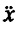 of a sample {x1, x2, . . ., xn} is defined as follows:
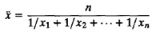
A harmonic mean should be used whenever an arithmetic mean can be justified for 1/xi. For example, suppose repeated measurements are made for the elasped time of a benchmark on a processor. In the ith repetition, the benchmark takes ti seconds. Now suppose the benchmark has m million instructions, the MIPS xi computed from the ith repetition is
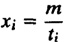
In Section 12.3, it was argued that ti’s should be summarized using the arithmetic mean since the sum of ti has a physical meaning. For the same reasons, xi’s should be summarized using the harmonic mean since the sum of 1/xi’s has a physical meaning. The average MIPS rate for the processor is
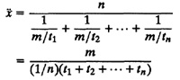
Notice, however, if xi’s represent the MIPS rate for n different benchmarks so that the ith benchmark has mi million instructions, then the harmonic mean of n ratios mi/ti cannot be used since the sum of the ti/mi does not have any physical meaning. Instead, as shown later in Section 12.7, the quantity 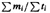 is a preferred average MIPS rate. This is a weighted harmonic mean of n observations. The weighted harmonic mean is defined as follows:
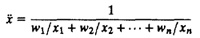
where wi’s are weights that add up to 1:
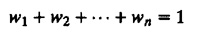
The harmonic mean is a special case of the weighted harmonic mean with all weights being equal, that is, wi = 1/n.
In the example of n observations of the MIPS rate, if the weights are chosen proportional to the size of the benchmark, that is,
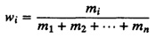
then the weighted harmonic mean would be
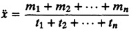
which is reasonable since the numerator represents the total size of all benchmarks and the denominator represents the total time on all benchmarks.
12.7 MEAN OF A RATIO
Given a set of n ratios, a common problem is to summarize them in a single number. This problem happens, as was discussed earlier in Section 12.6, when trying to summarize the MIPS rate for a processor from measurements of several different workloads. Considering the additivity of the numerator and denominator separately leads to the following rules for summarizing the ratios:
- 1. If we take the sum of numerators and the sum of denominators and both have a physical meaning, the average of the ratio is the ratio of the averages. For example, if xi = ai/bi, the average ratio is given by
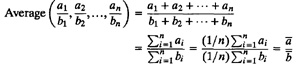
A common application of this guideline is in computing mean resource utilization as illustrated by the following example.
Example 12.3 The CPU utilization of a system as measured over five different intervals is tabulated in Table 12.3.
The average utilization is not 40% as it may appear. The base (denominators) of the ratios (total times) are not comparable. The mean utilization is obtained by calculating the total CPU busy time and total time and taking the ratio of the two.
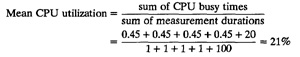
Example 12.3 also disproves the myth that ratios should always be summarized by a geometric mean. A geometric mean of utilizations is useless. Two special cases of the preceding rule, which in some cases lead to justification for the arithmetic and harmonic mean, respectively, are as follows:
- (a) If the denominator is a constant, so that the ratio has been taken with respect to a base that is constant across all observations, and the sum of the numerator has a physical meaning, the arithmetic mean of the ratios can be used. That is, if bi = b for all i’s, then
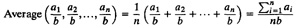
As an example of this guideline, consider again the problem of computing mean resource utilization. If n values of utilizations are all measured for the same interval of time, the average utilization can be computed using the straight arithmetic mean of n utilizations.
- (b) If the sum of the denominators has a physical meaning and the numerators are constant, then a harmonic mean of the ratio should be used to summarize them. That is, if ai = a for all i’s, then
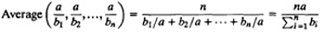
| TABLE 12.3 CPU Utilization Measured over Five Intervals
|
|
| Measurement Duration
| CPU Duration Busy (%)
|
|
| 1
| 45
|
| 1
| 45
|
| 1
| 45
|
| 1
| 45
|
| 100
| 20
|
|
|
| sum
| 200%
|
| Mean
| ≠ 200/5 or 40%
|
|
The problem of computing the mean MIPS rate for a processor using n observations of the same benchmark is an example of a case where this guideline can be used.
- 2. If the numerator and the denominator are expected to follow a multiplicative property such that ai = cbi, where c is approximately a constant that is being estimated, then c can be estimated by the geometric mean of ai/bi. The following case study illustrates the application of this guideline.
- Case Study 12.1 A number of benchmarks were run through a program optimizer. The static size of the program as measured before and after the optimizaion are shown in Table 12.4. Also shown in the table are the ratios of sizes before and after the optimization.